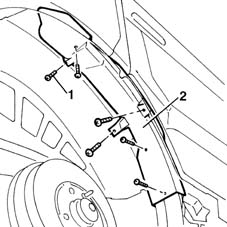
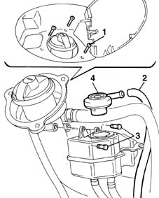

1080E11 multifunctional valve r r
- Path
- Procedures > 10 ENGINE UNIT > 1080 EXHAUST EMISSION CONTROL SYSTEM > 1080E evaporation control system > 1080E11 multifunctional valve r r
- Kind
- repair procedure (removal / refitting; the operation number is the code)
- Applies to
- engines: 1.6 16v; all production periods
- Interactive page
- https://sloeber94.github.io/elrnDB-fMltpl/en/#/2891307
Applies to: engines: 1.6 16v; all production periods
 Removing
Removing
 Refitting
Refitting4450B11 WHEEL (one) rear - R.R.
Raise the car.
1. Unscrew the retaining bolts.
2. Remove the fuel filler pipe plastic protection.

Applies to: engines: 1.6 16v; all production periods
1. Unscrew the fuel filler fitting retaining bolts.
2. Lower the upper section of the filler pipe as far as possible and disconnect the pipe from the multifunction valve.
3. Undo the bolts securing the separator to the filler fitting.
4. Turn the multifunction valve anticlockwise and remove.

Applies to: engines: 1.6 16v; all production periods
Refitting
RemovingFit the multifunction valve to the separator.
Screw in clockwise in order to secure to the separator.
Connect the pipe to the valve.
Fit the filler fitting in its seat and secure using bolts.
Refit the filler pipe plastic protection.
Lower the vehicle.